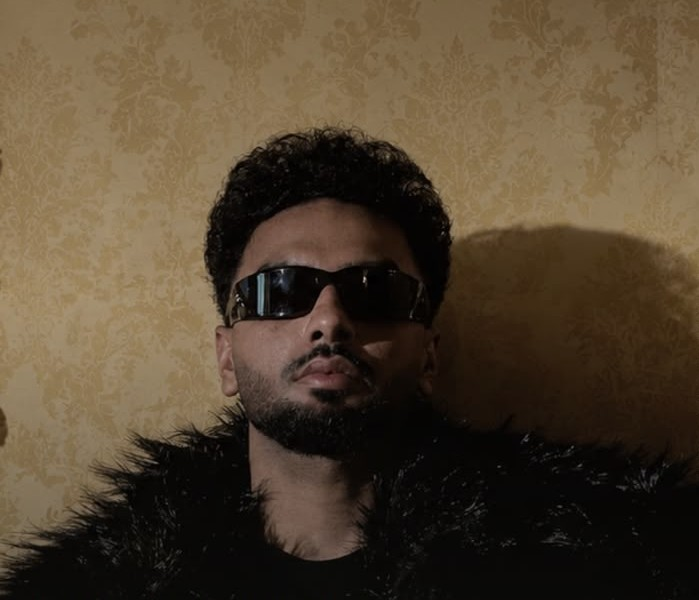
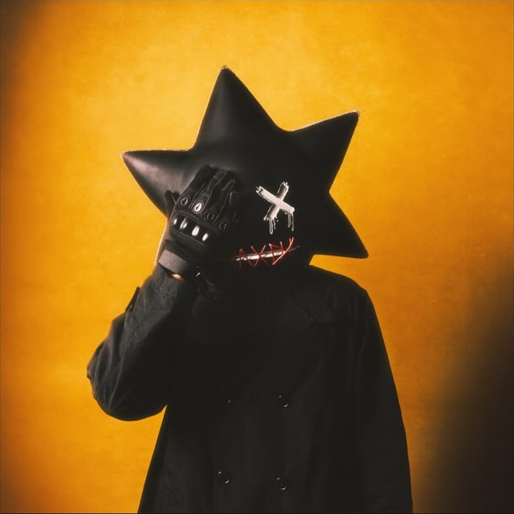

1.5B+
All-time Spotify streamsTracked lead + featured catalogue
AMRITSAR ROOTS. GLOBAL FREQUENCY.
PHOTOGRAPHY: BILLBOARD INDIA
THE NEXT CHAPTER IS ALREADY MOVING.
NAVAAN
SANDHU
ਨਵਾਨ ਸੰਧੂ
Punjabi at the core.
A world of sound around it.
PUNJABI SOUL✳HIP-HOP INSTINCT✳MELODY WITHOUT BORDERS
01 / THE ARTIST
A distinct voice.
A wider world.
Navaan Sandhu brings the weight of Punjabi storytelling to the rhythm and possibility of contemporary hip-hop and R&B.
Raised in Amritsar and shaped by time in the UK, the singer and songwriter moves comfortably between commanding rap, intimate melody and expansive production. His writing starts with lived experience; his sound keeps moving.
Across Naveezy, The Finest, House Navior and Bipolar, each project opens another part of his world. The result is a catalogue with identity, range and an audience that returns.
Explore the catalogue ↗02 / THE REACH
A billion-stream
body of work.
Career milestones & platform analytics.
Verified 02 November 2026.
9.39M
Peak recorded monthly listenersHistorical tracked peak · Worldwide3.2B
Lifetime YouTube viewsAcross official + other channelsThrough 31 October 2026
1.8M
Instagram followers@navaansandhu · Official profile ↗A LARGER YEAR. A DEEPER CONNECTION.
Growth you
can hear.
657 million Spotify streams in a year. Nearly double the annual listeners. A growing audience choosing to come back.
+86.5%
+91.9%Spotify annual listeners
16.75M → 32.15M
16.75M → 32.15M
+97%YouTube annual watch time
38.4M hours this year
38.4M hours this year
03 / START HERE
Five records.
One distinct voice.
The melody. The bars. The range.
470M+ lifetime views across these five videos.
Choose a record to switch the video. If playback is unavailable, open on YouTube.
Video figures: lifetime views on the five selected official uploads, rounded down to milestones. Snapshot sources and dates below.
04 / BEYOND A FIRST LISTEN
An audience
that stays.
Chosen on purpose.
Played again and again.
70%of streams come from listeners who intentionally choose his music.Spotify / Latest 28 days
12×Streams per monthly active listener in the latest 28 days.Intentional listening / Spotify
Rooted in Punjab.
Connected across borders.
India anchors the story. The UK, US and Canada have the highest shares of Spotify monthly active listeners within their local audiences.
Toronto and Vancouver also sit among his top five cities for Apple Music plays in the latest four weeks.

05 / BIPOLAR
More than
one frequency.
A 13-track project spanning ambition, intimacy and self-belief. Bipolar stretches the palette with Dhanda Nyoliwala, Mickey Singh, Param, Sanya Dandona and Shai.
The duality is the point: force and vulnerability, grounded storytelling and a broader sonic world.
Listen to Bipolar ↗06 / IN HIS OWN WORDS
“At the end of the day,Read the interview ↗
the goal is to make the best song possible.”
07 / THE NEXT CONVERSATION
Let the music
lead.
Contact management ↓08 / MANAGEMENT